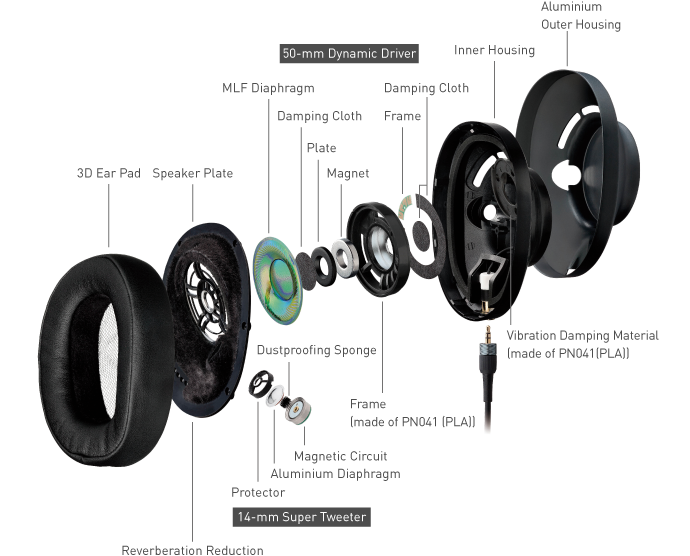

Our Advanced
Technology
Noise Cancelling
A headphone that features active noise cancellation includes a microphone on the earpiece to detect the incoming sound signals of the external (unwanted) noise. A battery-driven circuit generates the inverted wave on the fly, and adds it in to the music signal that is delivered to your ear. The generated sound signal acts to cancel out the background noise from the external sources.
Generally speaking, noise canceling is what most people are actually looking for when they think of either of these terms. Those famous Bose and Sony headphones you see reviewed and advertised? Those are noise canceling. The fundamental difference is that noise canceling is an active, electronic process. Noise isolating is, basically, passive — something to wedge in your ears to block out sound. They’re basically earplugs, except they can pipe in your Spotify.
Microphones built into noise-canceling headphones listen to and analyze the sound waves of the world around you. Then, an inverse of that wave is created by the headphone. Sending a trough when there’s a peak, and sending a peak when there’s a trough. Sending a compression when there’s a rarefaction, and sending a rarefaction when there’s a compression. When the “real” sound of the outside world and this manufactured “opposite” sound hit your ear, they cancel each other out.
Done well, the results are impressive. The best noise canceling headphones can reduce certain noises significantly. They work best on low-frequency, droning sounds. Aircraft engines are a great example. Car tire and engine noise on the highway is another. Even noisy air conditioners can be reduced fairly well.
Noise Isolating
Most in-ear headphones (aka earbuds) that go into your ear canal are, to some extent, noise isolating. How much ambient sound noise-isolating headphones reduce is a combination of their design and how well they fit in your ears. Everyone’s ears are different, and getting the right fit is crucial with any headphone. Doubly so if you’re trying to keep out the noise around you. Not only will a bad fit let in more ambient noise, but it will “let out” bass. Changing the tips on your earbuds could radically change the sound, and perhaps greatly improve their noise isolation abilities. Most headphones come with multiple tips. It’s worth trying them all to see what you like best. There are also aftermarket tips available for many earbuds, some even with memory foam that might work better for you.